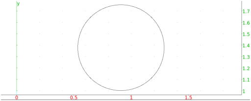

13.11.6 Excircles: excircle
The excircle draws an excircle of a triangle.
-
excircle takes three arguments:
A,B,C, three points.
- excircle(A,B,C) returns and draws the excircle
of the triangle ABC in the interior angle of A.
Example
Input:
excircle(-1,i,1+i)
Output:
